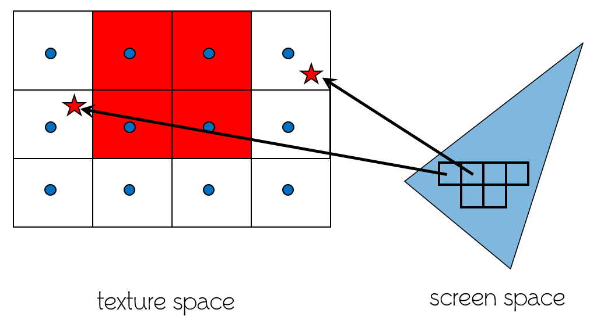
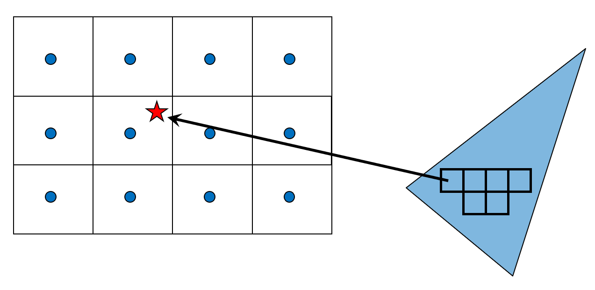
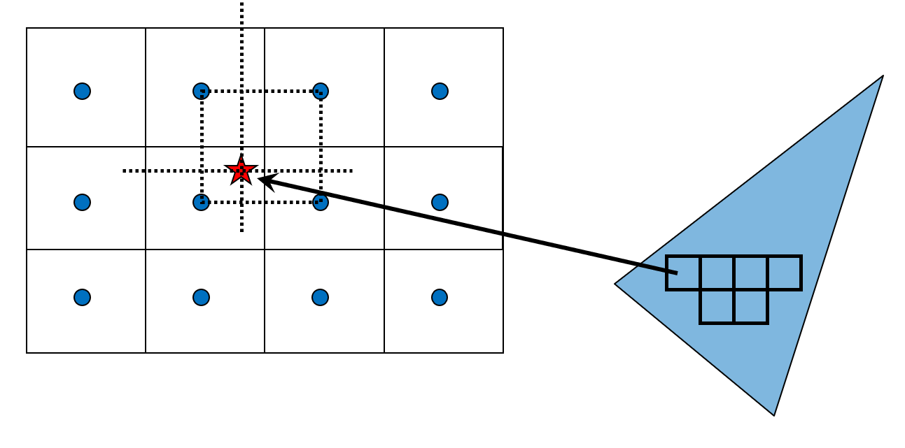
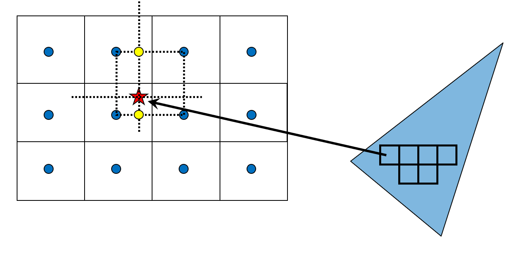
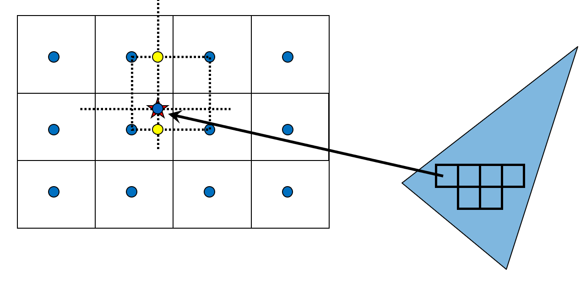
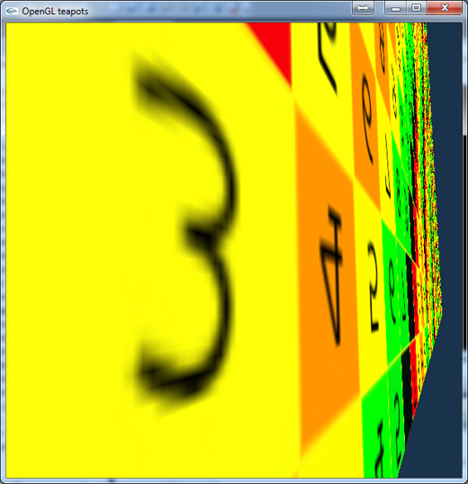
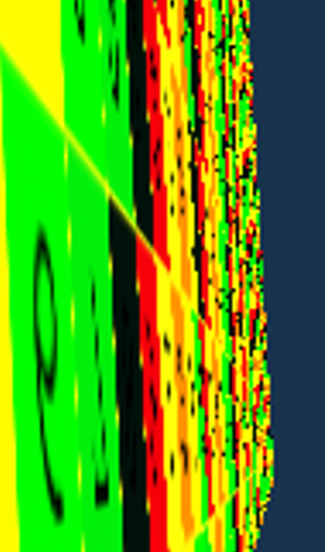
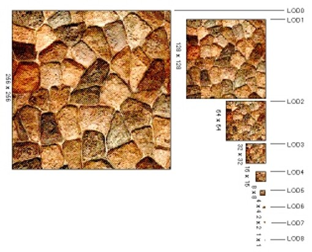

Computer Graphics
Textures
László Szécsi szecsi@iit.bme.hu
### UV maps - in modeling software
### WebGL texture object creation <pre class="kotlin"><code data-trim> <script type="text/template"> val glTexture : WebGLTexture? = gl.createTexture() val image = Image() // load image somehow gl.bindTexture(GL.TEXTURE_2D, glTexture) gl.texImage2D(GL.TEXTURE_2D, 0, GL.RGBA, GL.RGBA, GL.UNSIGNED_BYTE, image) gl.bindTexture(GL.TEXTURE_2D, null) </script> </code></pre>
### Binding the texture to a sampler uniform - in WebGLMath.Sampler2D.commit <pre class="kotlin"><code data-trim> <script type="text/template"> gl.uniform1i(uniformLocation, samplerIndex) gl.activeTexture(WebGLRenderingContext.TEXTURE0 + samplerIndex) gl.bindTexture(WebGLRenderingContext.TEXTURE_2D, glTexture) </script> </code></pre>
### Magnification - texel > pixel (magnification) - nearest: use the texel in which the pixel center is 
### Bilinear filtering 
### Bilinear filtering 
### Bilinear filtering 
### Bilinear filtering 
### Bilinear filtering result 
### Minification 
### Mipmap filtering 
### New vertex attribute: texCoord <pre class="kotlin"><code data-trim> <script type="text/template"> val texturedProgram = Program(gl, vsTransform, fsTextured, Program.PNT ) </script> </code></pre>
### Task: write appropriate Vertex Shader - take and pass texture coordinates
### Task: draw a textured billboard - create new Shader objects from new VS and FS sources - create new Program object with the above - create a new Material with the above program - set the colorTexture property of the material - use the set method, pass a new Texture2D - download asteroid.png, place it in a folder ‘media’ - create an instance of TexturedQuadGeometry - create Mesh, GameObject using the above
### Enable alpha blending <pre class="kotlin"><code data-trim> <script type="text/template"> gl.enable(GL.BLEND) gl.blendFunc( GL.SRC_ALPHA, GL.ONE_MINUS_SRC_ALPHA) </script> </code></pre>
### Task: experiment with filtering - in Texture2D - toggle GL.NEAREST / GL.LINEAR / GL.LINEAR_MIPMAP_LINEAR
### Task: experiment with texture coords - in TexturedQuadGeometry - what happens if you scale by 2? - what happens if you scale by 0.5?
### Task: where are you in the world - download world.png - set tex coords to see you country
### Task: tiling - download pattern.png - set tex coords to see repreating pattern
### Task: sprite animation - scale texture coordinates in vertex shader to show just one phase - add some number to show a different phase - pass a time-dependent value as a uniform parameter to identify current phase